All speeds are in knots, distances in nautical miles, altitude in feet. Heading and course are suffixed with °T for true course or °M for magnetic course.
| Center of the home position. | |
| Center point that will be used for distance searches. | |

|
Flight plan with distance, direction and magnetic course at each leg. |

|
Flight plan departure position on airport. Either parking, fuel box, helipad, water or runway. |
 
|
Current user aircraft position if connected to the flight simulator. Labels include registration number, airline (if available), flight number (if available), indicated speed, ground speed, magnetic heading, altitude, climb/sink arrow and wind magnetic heading and speed. |
| User aircraft gray outline on ground. | |

|
User aircraft trail if connected to the flight simulator. |

|
Range rings labeled with distance. |
 
|
VOR or NDB range rings labeled with ident and frequency. Color indicates Navaid type. |

|
Great circle distance and course measurement line indicating length and true heading at start and destination (usually equal for small distances). For shorter distances length is also shown in feet. |

|
Rhumb line of equal bearing distance measurement indicating distance and true heading. Rhumb lines are used to approach a VOR or NDB or travel along airways. For shorter distances length is also shown in feet. |

|
Measurement lines starting from an airport or navaid have the same color and additional ident and frequency labels. Course for rhumb lines will be shown in magnetic if the navaid has a magnetic variation attribute. |

|
A highlighted airport or navaid selected in the search result table. |
| A highlighted airport or navaid selected in the flight plan table. |
Airports having control towers are shown in dark blue others in magenta. Add-on airport names and idents are shown italic and underlined. Airports that are part of the flight plan have a light yellow text background.
| 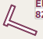 | Airports with hard surface runways longer than 8,000 ft. All runways longer than 4,000 ft are shown. Only for lower zoom levels. |
| Airports with hard surface runways. White line shows heading of longest runway. | |
| Airports with soft surface runways. | |
| Empty airports shown in gray. No taxiways, no parking spots and no aprons. | |
| Seaplane base having only water runways. | |
| Military airport. | |
| Heliport having only helipads and no runways. | |
| Abandoned airport. All runways are closed. | |
| Airports that have fuel available. | |
| 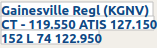 | Airport label showing (if available): Name, ident, control tower (CT - 119.550) and weather service frequencies (ATIS 127.150 or AWOS/ASOS), elevation (152 ft), availability of lighted runways (L), longest runway in ft * 100 (7400 ft) and Unicom frequency (122.95). |
Navaids that are part of the flight plan have a light yellow text background.
| 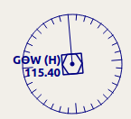 | VOR DME including ident, type (High, Low or Terminal) and frequency. Compass rose shows magnetic variation on lower zoom levels. |
| 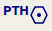 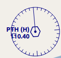 | VOR including ident, type and frequency. |
| 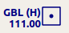 | DME including ident, type and frequency. |
| 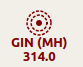 | NDB including ident, type (HH, H, MH or CL - compass locator) and frequency. |
| Waypoint with name. | |

|
Invalid airport, waypoint, VOR or NDB that is part of the flight plan but could not be found in the Scenery Database. |
| Marker with type and heading indicated by lens shape. | |
| 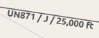 | Jet airway with label showing name, type (Jet or Both) and minimum altitude. Text depends on zoom distance. |

|
Victor airway with label showing name, type (Victor or Both) and minimum altitude. Text depends on zoom distance. |

ILS with glideslope. Label shows ident, frequency, magnetic heading, glideslope pitch and DME indication if available. |
|
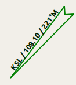
Localizer. Label shows ident, frequency, magnetic heading and DME indication if available. |
Runway, taxiway, helipad and apron colors indicate surface type.

|
Runway with length, width, light indicator (L) and surface type. |

|
Runway end with ident and magnetic heading. |

|
Displaced threshold. Do not use for landing. |

|
Overrun area. Do not use for taxi, takeoff or landing. |

|
Blast pad. Do not use for taxi, takeoff or landing. |

|
Taxiway with name. |

|
Semi transparent dotted aprons and taxiways indicate that no surface is drawn. It might use a photo texture or simply the default background. |

|
Tower. Red if a tower frequency is available. Otherwise just view position. |

|
Fuel |

|
GA ramp with parking number and heading tick mark. |
 
|
Gate with number and heading tick mark. Second ring indicates availability of jetway. |

|
Cargo ramp |
| Military combat parking or cargo ramp. | |

|
Helipad |
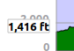 
|
Ground with start and destination airport elevation. |

|
Minimum safe altitude for flight plan. |
| 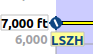 | Flight plan altitude. |

|
User aircraft if connected to the simulator. Labels are: Altitude, climb/sink arrow, distance flown and distance to destination. |
| User aircraft trail if connected to the flight simulator. |
Last update 2016-08-25